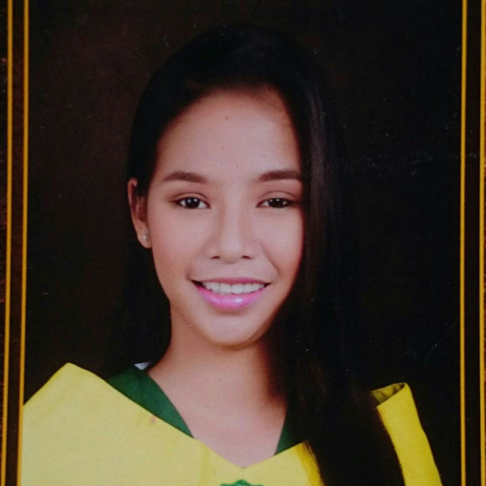

NOVELYN D. ARCIAGA
Katiko, President Quirino
Sultan Kudarat, 9804
arciaganovelyn@yahoo.com
09102280781

OBJECTIVE
To obtain a position as a teacher that will foster and utilized me to use my
learning's and organizational skills my education has provided and push me to grow as
professional and to work with will
with people and eventually contribute to the business institutional success.
PERSONAL DATA
Date of Birth: November 24, 1998
Place of Birth: Katiko, President Quirino, Sultan kudarat
Age: 19
Sex: Female
Civil Status: Single
Citizenship: Filipino
Religion: Roman Catholic
EDUCATION
Collegiate: Bachelor in Elementary Education
Notre Dame RVM COllege of Cotabato
#74 Sinsuat Avenue, COtabato City
Year 2019-2020
Secondary: Notre Dame of Katiko, Inc.
Katiko, President Quirino, Sultan kudarat
Year 2014-2015
Elementary: Katiko Central Elementary School
Katiko, President Quirino, Sultan kudarat
Year 2010-2011
AFFILIATION
Position: Member (2016-2018)
Position: Member (2016-2018)
- Science and Mathematics Club
Position: Member (2015-2016)
Work Experinces
April - May 2013: Special Program for the Employment of
Student (SPES)
Notre Dame of katiko, Inc
katiko, President Quirino, Sultan kudarat
April - May 2013: Working Scholar
Notre Dame of Cotabato
ACHIEVEMENTS
Housekeeping NCII
August - October 2017
Food Processing NCII
November - March 2016